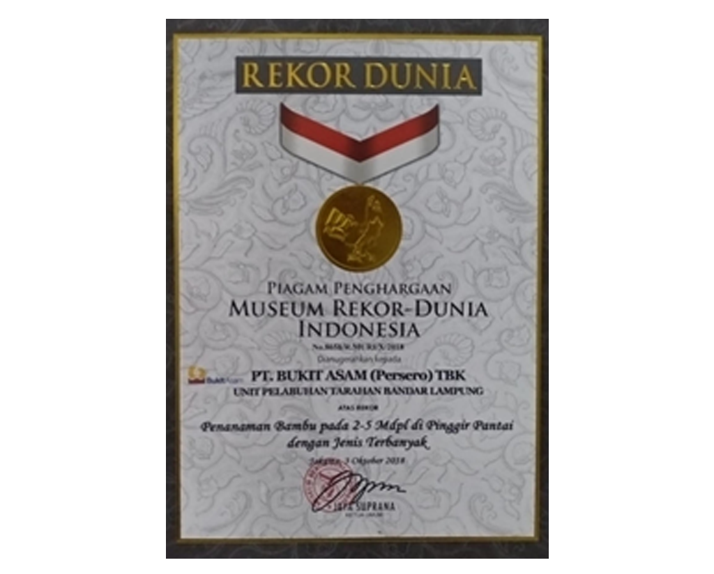
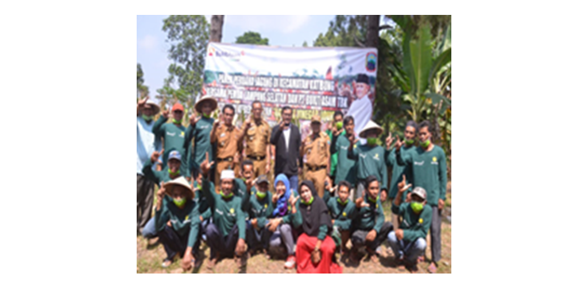

Konservasi Bambu PTBA Peltar
Program kerja ini dilaksanakan sejak tahun 2014. Berawal dari keinginan dan mimpi untuk menjadikan PTBA Unit Pelabuhan Tarahan menjadi Pelabuhan yang asri dan tidak banyak berdebu. Sehingga dilakukan pencarian jenis tanaman yang cocok ditanam di area operasional PTBA Unit Peltar. Salah satu tanaman yang kemudian dilihat dan dapat tumbuh dengan kondisi lingkungan yang sulit yaitu adalah Bambu. Berbagai jenis bambu kemudian mulai ditanam dan terciptalah PTBA dengan image bambunya saat ini. Berbagai program turunan telah dibuat berdasarkan program konservasi bambu yang dicetuskan dan memberikan banyak nilai manfaat tak hanya pihak Internal, namun juga eksternal. Penghargaan MURI pun diraih pada tahun 2018 dengan kategori penghargaan ‘Penanaman Bambu dengan Jenis Terbanyak Pada 3-5 Mdpl’. Kegiatan ini bahkan bekerjasama dengan Komunitas Bambu Nusantara Lampung untuk kemudian memberikan nilai manfaat di bidang Community Development.
Rekor MURI PTBA Peltar 2018 atas Program Konservasi Bambu
Pengolahan Limbah Bambu menjadi Cuka Bambu untuk Pertanian Kecamatan Katibung